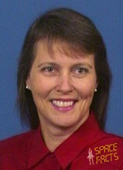

Independent scientific credentials
PhD astrophysics at 25, Westinghouse Science Talent Search honoree at 17, NASA astronaut semifinalist at 26. These are not inherited through marriage — they predate her relationship with McCasland by years.

Colonel, United States Air Force Reserve (Retired) · Ph.D. Astrophysics
Susan McCasland Wilkerson holds a PhD in astrophysics, was a NASA astronaut semifinalist, held TS/SCI clearances, handled classified satellite imagery, and was independently invited to a Podesta-organized meeting on UAP disclosure. She is not peripheral to this investigation — she is a node in it.
PhD astrophysics at 25, Westinghouse Science Talent Search honoree at 17, NASA astronaut semifinalist at 26. These are not inherited through marriage — they predate her relationship with McCasland by years.
Both McCaslands held TS/SCI clearances. Both worked in classified space programs. Susan handled classified satellite imagery through the Defense Dissemination Program. This is a dual-clearance household.
WikiLeaks email #2635 shows Susan was invited separately to the January 25, 2016 UAP disclosure meeting — her own RSVP, not as a plus-one. Both McCaslands were expected at the table.
When both halves of a household independently hold clearances, work in classified space programs, and separately receive invitations to a UAP disclosure meeting, the household itself becomes an intelligence node — not just one person within it.
San Diego, California
Now called Regeneron STS — the most prestigious pre-college science competition in the United States. Selection at 17 marks early identification as an exceptional scientific talent.
Tucson, Arizona
Completed doctorate by age 25. The University of Arizona's Steward Observatory is one of the top astrophysics programs in the country — particularly in optical/infrared astronomy and space instrumentation.
Johnson Space Center, Houston, TX / Lackland AFB, TX
Selected as a semifinalist in the astronaut class that included Sally Ride, Judith Resnik, and Guy Bluford. She was assigned to Lackland AFB at the time. Withdrew May 29, 1980 — reasons not publicly specified. Commissioned as USAF Lieutenant instead.
Active duty
Entered active duty as a Lieutenant after withdrawing from astronaut candidacy. Career progression to Captain (1984), then Lt. Colonel / Colonel in the Air Force Reserve.
Sacramento Peak Observatory, Sunspot, New Mexico
Solar observation and atmospheric research at the Air Force's dedicated solar research facility in southern New Mexico. First intersection with the New Mexico defense ecosystem.
HQ Space Division, El Segundo, California
The classified access marker. The Defense Dissemination Program handled distribution of classified satellite imagery and related intelligence products. This role required TS/SCI clearance and placed her directly inside the classified space intelligence pipeline — parallel to, but independent from, her husband's NRO-affiliated work.
Various
Maintained Reserve status through Colonel rank. Reserve officers with active clearances can be recalled for classified briefings and consultations — a mechanism that extends access well beyond active-duty retirement dates.
Defense analytics company. Married Neil McCasland in April 1985 during his MIT doctoral years while she was at TASC. The company specialized in technical analysis for national security clients.
Program manager at Boeing's Space and Verification Services division. Continued work in the defense/space industrial base.
Defense contractor providing simulation and training services.
Major defense prime contractor. Specific role and duration not publicly documented.
Reports indicate the McCaslands co-operated a defense consulting practice in Albuquerque, working within the same technology and institutional ecosystem.
Susan McCasland Wilkerson was independently invited to the January 25, 2016 meeting organized by John Podesta to discuss UAP disclosure strategy. She RSVPed separately from her husband. The meeting included DeLonge, Rob Weiss (Skunk Works), and other figures in the disclosure network.
This is not "the general's wife tagged along." The email chain shows Susan was invited as her own participant — implying the organizers considered her credentials and knowledge independently relevant.
You don't invite someone to a sensitive UAP disclosure strategy meeting unless you believe they bring something to the table. For Susan, that "something" is likely her astrophysics expertise, her classified satellite imagery background, or both.
Susan's primary public statement came via Facebook on approximately March 6, 2026 — one week after the disappearance. It remains the most detailed family communication in the public record.
"He has medical risks but not dementia, Alzheimer's, or confusion. He was not disoriented."
Disputed This directly contradicts the legal basis for the Silver Alert, which requires "irreversible deterioration of intellectual faculties." Either the criteria were stretched, or Susan is parsing terminology — "not dementia" doesn't necessarily mean "no cognitive issues."
"There was no concerning Friday-morning phone call to relatives."
Documented This reads as a specific denial of a specific rumor circulating in online communities. She confirms "contact with family" that morning but provides no further detail about household movements.
"He retired nearly 13 years ago with only common clearances since."
Documented A deliberate pushback against the idea he remained operationally involved in classified programs. Notable that she specifies "common clearances" — acknowledging some clearance level remained, just not SAP-level access.
[Explicitly denied UFO-related abduction claims and fabricated stories]
Documented She called out specific online fabrications. Her tone reads as genuine distress at sensationalization, not as performance.
Susan's statement is notable for what it doesn't say: the specific medical condition that triggered the Silver Alert, the exact timeline of that morning (when she realized he was gone, how long before calling authorities), whether his vehicle was present, and what the dogs may have found. She addresses the most sensational claims while declining to provide the granular detail that would help reconstruct the morning itself.
When both halves of a marriage hold independent TS/SCI clearances, work in classified space programs, and are separately invited to UAP disclosure meetings, the intelligence picture isn't about one person. It's about a household with dual channels into the classified world.
McCasland is an engineer and program manager. Susan is a PhD astrophysicist with observation and imaging expertise. If UAP-related evidence involves anomalous observations or imagery analysis, her skills are independently relevant — which may explain the separate Podesta invitation.
As the closest person to the subject and the family's public spokesperson, Susan controls the narrative more than any other single individual. What she chooses to share — and what she doesn't — shapes what the public can and cannot analyze.
If the disappearance were targeting McCasland specifically because of what he knows, the fact that Susan — who holds parallel knowledge and access — is unharmed is either evidence against a targeted action or evidence that the targeting was narrowly scoped to him specifically.